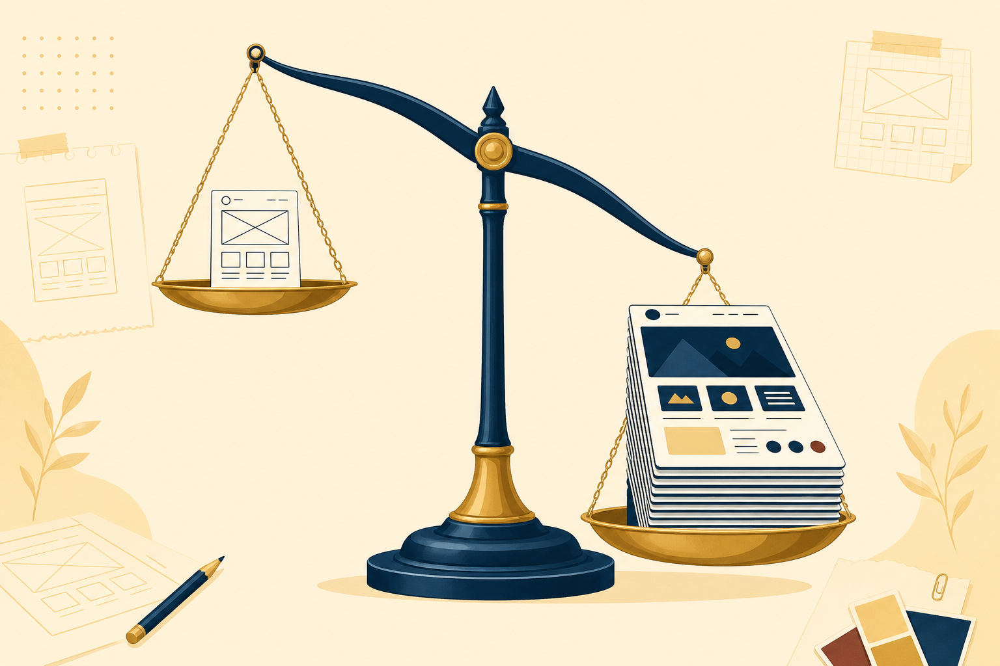
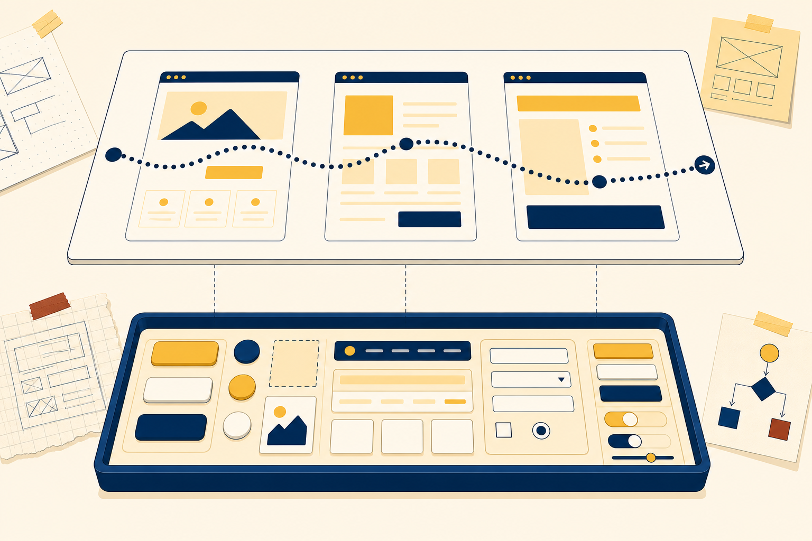
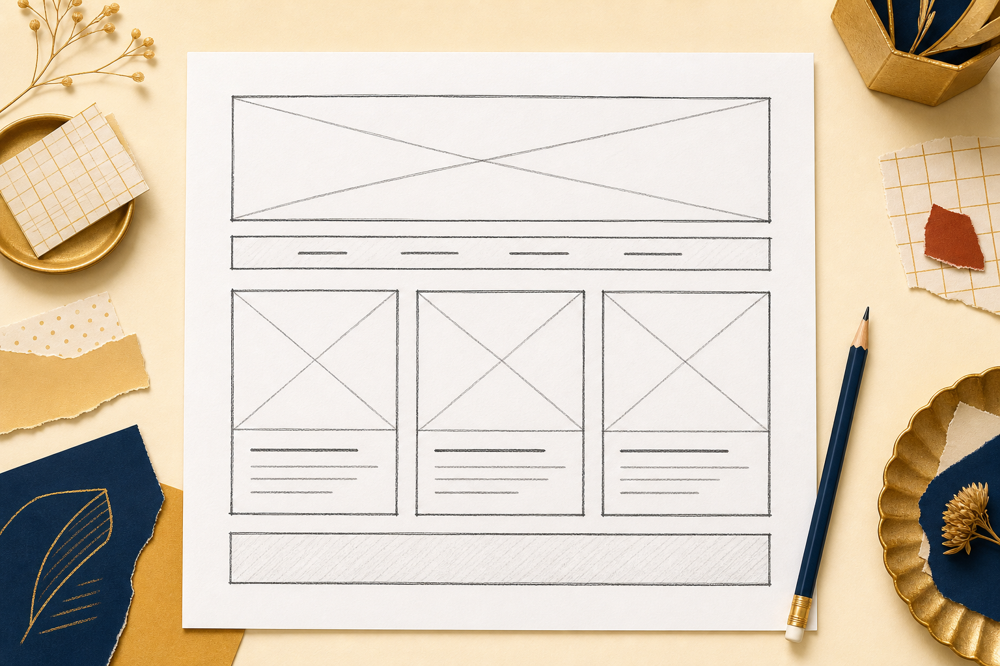
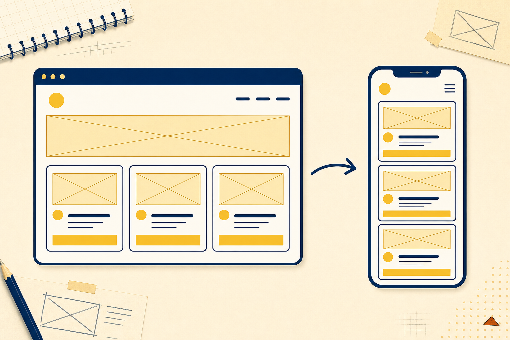
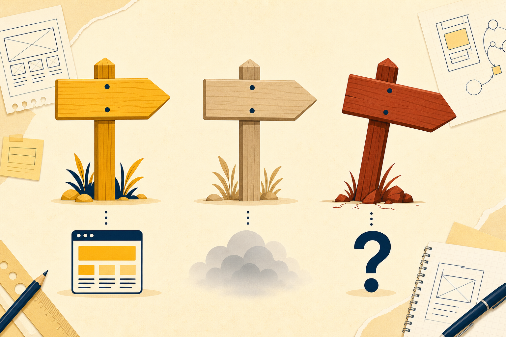
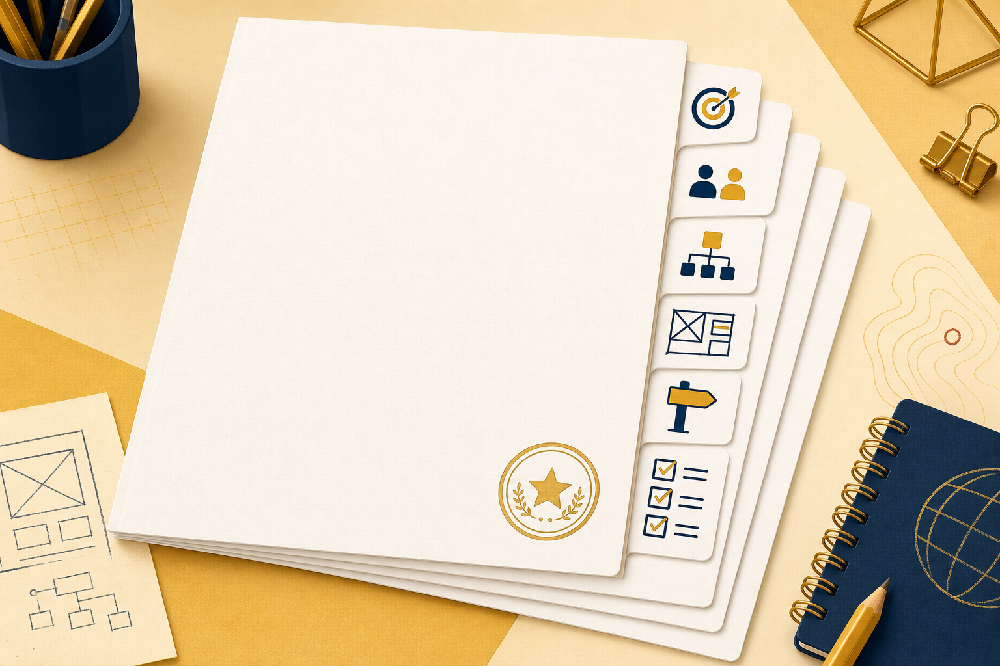

Separate
Tell UX from UI and measure both with five principles.
The officers want more pages. And a plan before anyone writes markup.
Tell UX from UI and measure both with five principles.
Construct a sitemap and wireframes before any code.
Critique a site against the principles and assemble a site plan.
And the hours multiply by every page the change touches.

Goals phrased as outcomes someone could test.
Audiences named by what they know and what they come to do.
Actions that recur earn pages of their own.
Skip question three and the site organizes around the owner, not the visitor.
The wish: the campus food pantry wants a site "so people know we exist."
Rewrite it as one checkable goal, then name one visitor action the site should invite.
Regularscheck hours, book a slotHours and Booking
First-timerslearn what help existsSubjects
Bothpick up exam-week adviceStudy Tips
Bothfind the room, ask a questionContact
Audience → action → the page that answers it. Hold this table. It becomes a diagram.

Every interface choice either serves the visitor's experience or gets in its way.
Tasks finish without guesswork
what do I do next?Works for every visitor
alt text · landmarks · focusNothing relearned page to page
one stylesheet, enforcedEvery action gets an answer
:hover and :focus twinsLayout adapts to the screen
flex-wrap, half of itGainsscreen room on small displays
Fights usabilitythe bar stops being findable
Fights accessibilitykeyboard visitors may never summon it
Fights consistencyno other page behaves this way
Design is deciding which principle wins, on purpose, in writing.
index.htmlsubjects.htmlhours.htmlstudy-tips.htmlcontact.htmlfaq.htmllinked from Hours, not the barName every page now, with its file name. Keep everything within two clicks of Home.

header · nav · footerlandmarks, yours since Chapter 3
h1: page headingthe heading pair from Chapter 2
row of three cardsa flex line, yours since Chapter 6
.subject-cards {
display: flex;
flex-wrap: wrap;
gap: 16px;
}The only layout rule the whole sketch asks for.
Rows that break: flex-wrap, owned
"Below a chosen width": waits for Chapter 8

Name: what the footer becomes in CSS terms when you build that row, and the declaration that starts it.
footer { display: flex; }Recycling Guidenames the content
Resourcesa page exists, holding what?
Learn Moremore about what?

The truck posts: its menu, its weekly locations, and a catering request page. Rewrite the three failing labels.

Then test it on one person for ten minutes.
Five principles against the shared club site.
The six-page sitemap, every file named.
Wireframes at desktop and phone width.
The six-section plan, addressed to the officers.
Estimated time: 4-5 hours · Submit skills-lab-7a-lastname.zip
Goals, audiences, actions, in order.
The visit, the controls, five principles.
Sitemap decides pages. Wireframe decides layout.
The site plan a stakeholder can approve.
Exit ticket: Your phone wireframe promises the nav stacks "below a chosen width." Which promise-keeping tool do you not own yet?
Next: media queries keep every promise your narrow sketches made.